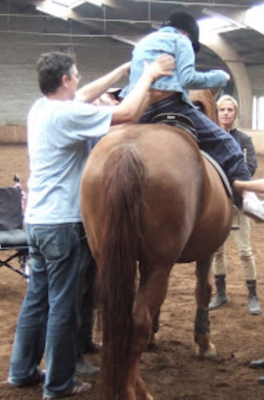
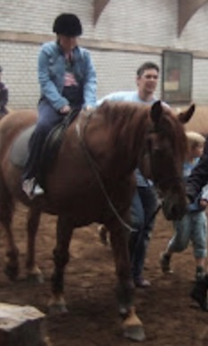

Headache Steady
8 May 2007
My daughter is still having headaches despite round-the-clock acetaminophen and 9 mg per day of dexamethasone.
She continues to be very sensitive to noise around her.
Late this afternoon she commented that her vision had gotten noticeably worse—everything is “more double” than it’s been being.
She woke earlier than usual this morning, around 7:30 AM, and went to bed a little earlier, around 9:30 PM.
Otherwise she’s still a game-playing fiend and wisecracking teenager. She’s very much enjoying the visits from her father and stepmother, who flew in yesterday. She’s also delighted to have seen her best friend Charlotte twice, on Sunday and tonight. Charlotte is unequivocally the number one person she wanted to see before she dies.
Frustratingly, we’ve yet to hear back on today’s bloodwork. It may not matter; her finger bruised impressively after the blood prick, so I suspect her platelets are still too low to resume chemotherapy. Her stepmother talked with her about that (resuming chemo), and she may decide not to continue after all, opting for more quality now.
I am driving myself insane reading blog after blog after online journal documenting others’ final days. The only thing that’s certain is that it’s different for everyone. There’s no way to tell how long she has or whether we’ll see the end coming. Looking at her now, I wonder if I didn’t mishear the doctors last Sunday. She doesn’t look like someone who’s dying.
Bloodwork
9 May 2007
Yesterday’s results:
Hemoglobin 5.7 -- 6.1 last Friday (normal is 12-16)
Leukocytes 0.4 -- 3.1 last Friday (white blood cells; normal is 4.5-11)
Thrombocytes 27 -- 47 last Friday (platelets; normal is 150-400)Her platelets continue to decline and are approaching the dangerous range (under 20). Her white blood cells have undergone a staggering drop. She doesn’t have to have a transfusion yet, but it may well become necessary.
Needless to say, she won’t be resuming etoposide.
Keepin’ On Keepin’ On
11 May 2007
My daughter’s aphasia is gradually worsening, but otherwise she seems stable. It’s been almost two weeks since we had The Talk with the doctors in Nijmegen.
Last night my husband and I took her out to a nice restaurant for dinner. We had a lot of fun; it was nice to have a “grownup” evening together (the youngest two kids are bunking it at the grandparents’). She drank hot chocolate and whipped cream with her steak.
During our nightly back-scratch, she asked if she should write a will. I told her it was a good idea if she had things she wanted to give to specific people after she died.
She finally saw a physical therapist today. The therapist will come again Tuesday; in the meantime my daughter has a few exercises to do each day.
Tonight she’s sleeping at the hotel with her father and stepmother. Tomorrow they’ll visit the Saturday market downtown, joined by her best friend Charlotte. Late afternoon the two girls will come back here for a slumber party.
On May 16 (Wednesday) we visit St. Radboud’s again for bloodwork and to speak with her oncologist. As a matter of fact, Dr. Gidding called today to see how she’s doing. Wednesday we’ll discuss when to take another MRI and whether my daughter can (and should, even if she can) go ahead with the scheduled May 21 round of cisplatinum.
Living the Wild Life
19 May 2007
We saw Dr. Gidding Wednesday. My daughter’s blood is mostly on the rise, though still far too low to do any more chemo: platelets 49 (up from 27), white blood cells 0.9 (up from 0.4). Her hemoglobin is still going down: 4.7 (5.7 last week). This is cause for concern, and we have to watch for paleness and extreme tiredness.
She’ll have another MRI (brain only) on Monday. I’ll be glad to see what the tumor is doing. Has it grown dramatically? We’re three weeks into the terminal phase and our daughter seems relatively stable. Dr. Erasmus, the neurologist, told us to expect dramatic changes; it’s like a staircase, with plateaus of functioning followed by abrupt declines. Clearly we’re on a plateau, but how long will it last and how far is the next drop?
She and Charlotte pulled out the fuse beads on Sunday and she’s been making things like a fiend ever since. I haven’t ironed so much since… well, ever.
We spent an hour making out her will (far from finished; we’re only just through her jewelry). We loaded up on candy at the store today. She had a few sips of a Bacardi Breezer last night (she could have drunk the whole thing as far as I’m concerned). Two nights ago all three kids got a quarter-inch of Bailey’s Irish Cream in a shotglass (if we’re bending the rules because someone’s dying, at least we’re bending them fairly).
The atmosphere here is a mixture of “live it up while you can” and “hurry up and wait.” I’m starting to truly, truly understand what living in the moment means.
Mother’s Day
20 May 2007
We’re celebrating Mother’s Day today, a week late; the youngest two were away last Sunday, and my eldest was enjoying the penultimate day of her father and stepmother’s visit. In keeping with tradition I got presents and breakfast in bed, including a lovely and perfectly readable card from Meg. Thank goodness.
The pile of fuse-bead creations is nearing the ceiling (I exaggerate, but check back a week from now). Our two girls played a game of Monopoly. Then Meg and I showered. We cancelled the home health-care visits a week ago; it felt weird, we didn’t really need them, and I know Meg likes it much better when we bathe and dress her. Now that we’ve met most of the team, I feel good about being able to keep them on reserve until we need them.
The three kids took turns slamming a coconut with a hammer. We ate fresh coconut slivers with lemon sorbet outside. After that Meg was tired; she’s resting now.
For the past week or so she’s been drooling, mainly when lying down. Her left eye is noticeably different from her right, more ‘squashed’, the lid less wide open. Despite still being on round-the-clock acetaminophen, she occasionally mentions a headache. In fact, if you ask her if her head hurts, it always does: a 2 or 3 on a 10-point scale. When she brings it up herself, it’s usually a 6 or 7.
Her feet are sometimes very swollen, sometimes less so. Likewise, her right hand sometimes seems very pale; a few days ago her lips seemed blanched. At other times one cheek is brightly flushed. All transitory.
She’s more somber, seems more preoccupied with her approaching death. Once or twice a day she feels very sad, sometimes very lonely; after a brief cry and some hugging, the feeling passes.
She’s up to wearing her leg brace 5 hours per day (on the way to 8) while sleeping. The physical therapist left a bicycle contraption on Friday; she does about 8 rounds on it.
Last night we watched Corpse Bride after dinner. It was not the easiest of situations; Meg sees double all the time, even close up, and she didn’t want to watch with us. I tried to coax her to come sit with us at any rate, but she declined. She parked at the table doing fuse beads while the four of us lounged on the couch together. Halfway through the film she wanted to go upstairs to bed. The two youngest had been looking forward to a family film night, so I wasn’t willing to leave in the middle. Fortunately Meg was fine with that, and still awake when the movie ended and I came up to scratch her back.
I’ve come to see this time together as a bonus rather than an obligation, even on the nights I’m so tired I want to collapse. I scratch, massage, then scratch again for 20 to 30 minutes. Sometimes we talk, sometimes we’re silent. I leave it up to her. Either way, it’s guaranteed quality time together, mother and daughter, every day.
MRI and Horses
21 May 2007
Today’s MRI session was short, about 20 minutes. For some reason she didn’t lie as still as she usually does; they had to redo at least one portion of the scans. I hope the images will be clear enough. It will most likely be next week before we hear back on the results.
They also took scads of blood, so we’ll hear about her hormone, magnesium, and other levels too.
We discovered that she would love to ride a horse again. Friends have a mentally handicapped niece who rides with a special group; we called, and the group also includes physically handicapped children. They have space: she’ll go riding tomorrow evening!
When I called, I’d forgotten we’re supposed to eat dinner at our neighbors’; normally I’d call the riding school back and tell them I’d made a mistake, that we’ll be there a week later. I hate reneging on my promises. But we may not have a week. We have no idea whether next Tuesday she will be just like she is now, or far sicker, or even gone. So we’ll be postponing dinner with the neighbors.
Tomorrow is our free trial lesson; after that we have to sign up for three months at a time. I suspect that after we describe the situation, they’ll be willing to deviate from that plan. Here’s hoping Meg will be in good shape long enough for them to need to.
Ride ’Em Cowgirl
22 May 2007
She was really looking forward to tonight’s riding session, and she had a great time even though she was only on the horse for about 10 minutes (her butt hurt).
 
We were there for about an hour. We walked through the stable and around the outside pastures. We spent a lot of time with Sterretje, Roosje, and Hartje, 5 week-old kittens.
We ate sandwiches and apples in the car on the way home—already bedtime for the youngest two.
If Meg wants to, she can go back next Monday morning at 11:30 for half an hour private riding time. The instructor will bring her “butt cushion” (a sheepskin). Stay tuned…
African Safari
24 May 2007
While our youngest two enjoyed their yearly school trip today, the three of us went on an African safari. We rode through several habitats where the animals roam freely and took pictures through the car windows.
Halfway through the park we stopped for lunch. It was still on the early side, so we walked through several more habitats first.
We crossed a bridge where we could buy fish food pellets out of old bubblegum dispensers. The fish went into a frenzy, giving us the (undoubtedly erroneous) impression we were the only people who’ve ever stopped to feed them, saving them from an extinction only hours away.
Then we stopped to eat. Soup and bread, sandwiches, french fries, and of course an ice cream.
Our table was in the shade beside a wide shallow pool separating us from the tigers. There was not a tiger to be seen while we were eating, but one emerged just as we were moving on.
Then we stepped back into the car for a ride through the last few habitats. The giraffes were an absolute highlight. One of them found the rubber stripping on the top of our car quite tasty, though not as tasty as the actual food the car in front of us offered.
Growing Tumor and Funeral Plans
24 May 2007
We met with Dr. Gidding today in Nijmegen. Our daughter is still alive, still in good shape, and her blood has restored itself to reasonable levels (hemoglobin 4.6, platelelets 106, white blood cells 1.2); she could continue with the carboplatinum-etoposide treatments. But the MRI from May 21 confirms what we’ve known since April 28: the tumor continues to grow. The oncology team recommends we definitively stop curative treatment and move forward with palliative care.
How much longer our daughter has, the doctor didn’t want to say. She says she’s never predicted it accurately and it varies so much from one person to the next that the only meaningful prediction is that it won’t be years. Dr. Gidding said her decline will likely be gradual up to a point; near the end it may go more quickly. She will gradually sleep more and more; there may be more loss of functionality as the tumor presses on new areas in the brain. Eventually our daughter will lose consciousness and pass away.
This contrasts with what the neurologist had told us, but there is an explanation. Fluid due to irritation from tumor growth can build up quickly, suddenly causing an excess of pressure, and this is what happened the night of April 27. Now dexamethasone is keeping this excess fluid away. All that’s left is for the tumor to grow so large that the brain no longer fits within the skull and must push down into the spinal column. This growth is gradual.
Saturday evening we have an appointment with an independent funeral advisor to help us sort through our options; Meghan plans to be there. She’s also having to think about things like whether she prefers to have minimal pain or to stay as fully conscious as possible down the road; whether she wants IV fluids when she gets to the point she can no longer drink on her own; whether she wants to donate organs, donate her brain to science. She doesn’t know, she doesn’t know. We’ve told her she doesn’t have to make these decisions. We’ll make them for her when the time comes if she doesn’t have a definite preference. I don’t want her spending all her time now mulling over her death.